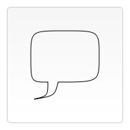
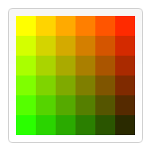

Canvas
What is HTML Canvas?
A canvas is a rectangular area on an HTML page. By default, a canvas has no border and no content.
The default size of the canvas is 300 pixels × 150 pixels (width × height).
What HTML5 Canvas Is Used For?
- Dynamic graphics
- Online and offline games
- Animations
- Interactive video and audio
History
Canvas was initially introduced by Apple for use inside their own Mac OS X WebKit component in 2004, powering applications like Dashboard widgets and the Safari browser.
Later, in 2005 it was adopted in version 1.8 of Gecko browsers, and Opera in 2006, and standardized by the Web Hypertext Application Technology Working Group on new proposed specifications for next generation web technologies.
Browser Support
| Element | Chrome | Internet Explorer | Firefox | Safari | Opera |
|---|---|---|---|---|---|
| canvas | 4.0 | 9.0 | 2.0 | 3.1 | 9.0 |
The types of canvas context:
- "2d"
- "webgl"
- "webgl2"
- "bitmaprenderer"
var canvas = document.getElementById('tutorial');var ctx = canvas.getContext('2d');
The canvas grid
The origin of canvas grid is positioned in the top left corner at coordinate (0,0).

Drawing rectangles
There are three functions that draw rectangles on the canvas:
- fillRect(x, y, width, height) - Draws a filled rectangle.
- strokeRect(x, y, width, height) - Draws a rectangular outline.
- clearRect(x, y, width, height) - Clears the specified rectangular area, making it fully transparent.
Drawing paths
- beginPath() - Creates a new path.
- closePath() - Adds a straight line to the path, going to the start of the current sub-path.
- stroke() - Draws the shape by stroking its outline.
- fill() - Draws a solid shape by filling the path's content area.
Drawing a triangle
function draw() {
var canvas = document.getElementById('canvas');
if (canvas.getContext) {
var ctx = canvas.getContext('2d');
ctx.beginPath();
ctx.moveTo(75, 50);
ctx.lineTo(100, 75);
ctx.lineTo(100, 25);
ctx.fill();
}
}

Moving the pen and lines
- moveTo(x, y) - Moves the pen to the coordinates specified by x and y.
- lineTo(x, y) - Draws a line from the current drawing position to the position specified by x and y.
Arcs
- arc(x, y, radius, startAngle, endAngle, anticlockwise)
- arcTo(x1, y1, x2, y2, radius)
Angles in the arc function are measured in radians, not degrees. To convert degrees to radians you can use the following JavaScript expression:
radians = (Math.PI/180)*degrees
Example. Draw a Circle
var c = document.getElementById("myCanvas");
var ctx = c.getContext("2d");
ctx.beginPath();
ctx.arc(95, 50, 40, 0, 2 * Math.PI);
ctx.stroke();
Bezier and quadratic curves
- quadraticCurveTo(cp1x, cp1y, x, y)
- bezierCurveTo(cp1x, cp1y, cp2x, cp2y, x, y)

Example. Quadratic Bezier curves
function draw() {
var canvas = document.getElementById('canvas');
if (canvas.getContext) {
var ctx = canvas.getContext('2d');
ctx.beginPath();
ctx.moveTo(75, 25);
ctx.quadraticCurveTo(25, 25, 25, 62.5);
ctx.quadraticCurveTo(25, 100, 50, 100);
ctx.quadraticCurveTo(50, 120, 30, 125);
ctx.quadraticCurveTo(60, 120, 65, 100);
ctx.quadraticCurveTo(125, 100, 125, 62.5);
ctx.quadraticCurveTo(125, 25, 75, 25);
ctx.stroke();
}
}

Applying styles and colors
- fillStyle = color - Sets the style used when filling shapes.
- strokeStyle = color - Sets the style for shapes' outlines.
By default, the stroke and fill color are set to black.
A fillStyle example
function draw() {
var ctx = document.getElementById('canvas').getContext('2d');
for (var i = 0; i < 6; i++) {
for (var j = 0; j < 6; j++) {
ctx.fillStyle = 'rgb(' + Math.floor(255 - 42.5 * i) +
', ' + Math.floor(255 - 42.5 * j) + ', 0)';
ctx.fillRect(j * 25, i * 25, 25, 25);
}
}
}

Line styles
- lineWidth = value - Sets the width of lines drawn in the future.
- lineCap = type - Sets the appearance of the ends of lines.
- lineJoin = type - Sets the appearance of the "corners" where lines meet.
- miterLimit = value -Establishes a limit on the miter when two lines join at a sharp angle, to let you control how thick the junction becomes.
- getLineDash() - Returns the current line dash pattern array containing an even number of non-negative numbers.
- setLineDash(segments) - Sets the current line dash pattern.
- lineDashOffset = value - Specifies where to start a dash array on a line.
Gradients
- createLinearGradient(x1, y1, x2, y2) - Creates a linear gradient object with a starting point of (x1, y1) and an end point of (x2, y2).
- createRadialGradient(x1, y1, r1, x2, y2, r2) - Creates a radial gradient. The parameters represent two circles, one with its center at (x1, y1) and a radius of r1, and the other with its center at (x2, y2) with a radius of r2.
- gradient.addColorStop(position, color) - Creates a new color stop on the gradient object.
Drawing text
- fillText(text, x, y [, maxWidth]) - Fills a given text at the given (x,y) position. Optionally with a maximum width to draw.
- strokeText(text, x, y [, maxWidth]) - Strokes a given text at the given (x,y) position. Optionally with a maximum width to draw.
function draw() {
var ctx = document.getElementById('canvas').getContext('2d');
ctx.font = '48px serif';
ctx.fillText('Hello world', 10, 50);
}
Styling text
- font = value - The current text style being used when drawing text. This string uses the same syntax as the CSS font property. The default font is 10px sans-serif.
- textAlign = value - Text alignment setting. Possible values: start, end, left, right or center. The default value is start.
- direction = value - Directionality. Possible values: ltr, rtl, inherit. The default value is inherit.
- textBaseline = value - Baseline alignment setting. Possible values: top, hanging, middle, alphabetic, ideographic, bottom. The default value is alphabetic.

Transformations
Saving and restoring state
- save() - Saves the entire state of the canvas.
- restore() - Restores the most recently saved canvas state.
Translating
- translate(x, y) - Moves the canvas and its origin on the grid. x indicates the horizontal distance to move, and y indicates how far to move the grid vertically.
Rotating
- rotate(angle) - Rotates the canvas clockwise around the current origin by the angle number of radians.

The rotation center point is always the canvas origin. To change the center point, we will need to move the canvas by using the translate() method.
Scaling
- scale(x, y) - Scales the canvas units by x horizontally and by y vertically. Both parameters are real numbers. Values that are smaller than 1.0 reduce the unit size and values above 1.0 increase the unit size. Values of 1.0 leave the units the same size.
A scale example
function draw() {
var ctx = document.getElementById('canvas').getContext('2d');
// draw a simple rectangle, but scale it.
ctx.save();
ctx.scale(10, 3);
ctx.fillRect(1, 10, 10, 10);
ctx.restore();
// mirror horizontally
ctx.scale(-1, 1);
ctx.font = '48px serif';
ctx.fillText('MDN', -135, 120);
}

Transforms
- transform(a, b, c, d, e, f) - Multiplies the current transformation matrix with the matrix described by its arguments.
- setTransform(a, b, c, d, e, f) - Resets the current transform to the identity matrix, and then invokes the transform() method with the same arguments.
- resetTransform() - Resets the current transform to the identity matrix.
Animations
Basic animation steps
- Clear the canvas
- Save the canvas state
- Draw animated shapes
- Restore the canvas state
Controlling an animation
- setInterval(function, delay) - Starts repeatedly executing the function specified by function every delay milliseconds.
- setTimeout(function, delay) - Executes the function specified by function in delay milliseconds.
- requestAnimationFrame(callback) - ells the browser that you wish to perform an animation and requests that the browser call a specified function to update an animation before the next repaint.